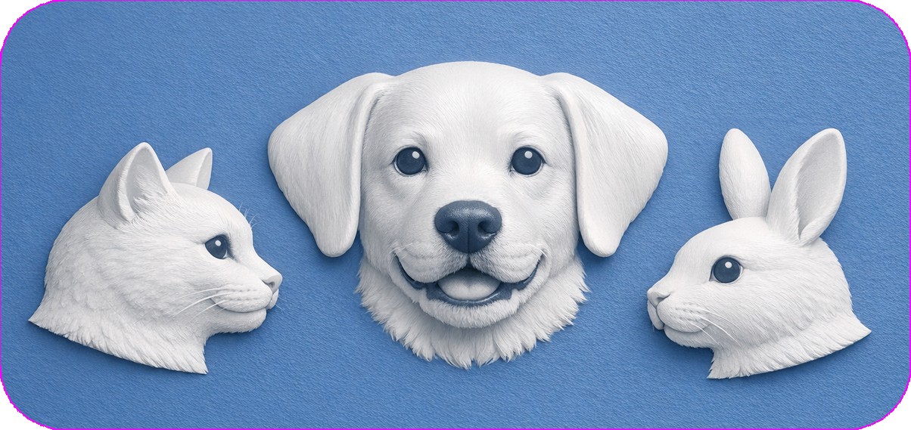

🐾 PetApp2 – AIペットアプリシリーズ

はじめに
PetApp2シリーズは、AIがあなたの声や笑顔を認識し、
ペットが生きているように反応するデスクトップアプリです。
犬・猫・うさぎなどのペットを登録し、表情や動作を再現して楽しむことができます。
Portable版はインストール不要で、ZIPを展開するだけですぐに利用できます。
エディション一覧
| エディション名 |
種類 |
内容 |
ダウンロード |
| 🐾 PetApp2-portable |
テンプレート版 |
ユーザー自身のペットを登録して使用できます。 |
Download |
| 🐶 PetApp2_shelly |
犬デモ版 |
シェルティ犬「Shelly」のデモ。 |
Download |
| 🐱 PetApp2_mimi |
猫デモ版 |
シャム猫「Mimi」のデモ。 |
Download |
| 🐰 PetApp2-peter |
うさぎデモ版 |
ネザーランドドワーフ「Peter」のデモ。 |
Download |
主な機能
- ペット画像・動画を登録して動作を再現
- 15種類の状態（n1〜n3、p1〜p12）に対応
- 笑顔（顔認識）と声掛け（音声認識）で状態が切り替わる
- プロフィール編集（種別・名前・毛色など）
- AI画像/動画生成ガイド（Gemini / Copilot / Pika）
- プロンプト自動生成機能（和文／英文）
- インストール不要の Portable 版
- Windows 10/11 対応
- MIT ライセンス
動作環境
- Windows 10 / Windows 11
- 外部GPU不要（CPU内蔵GPUで動作）
ライセンス
MIT License
Copyright (c) usakowhity